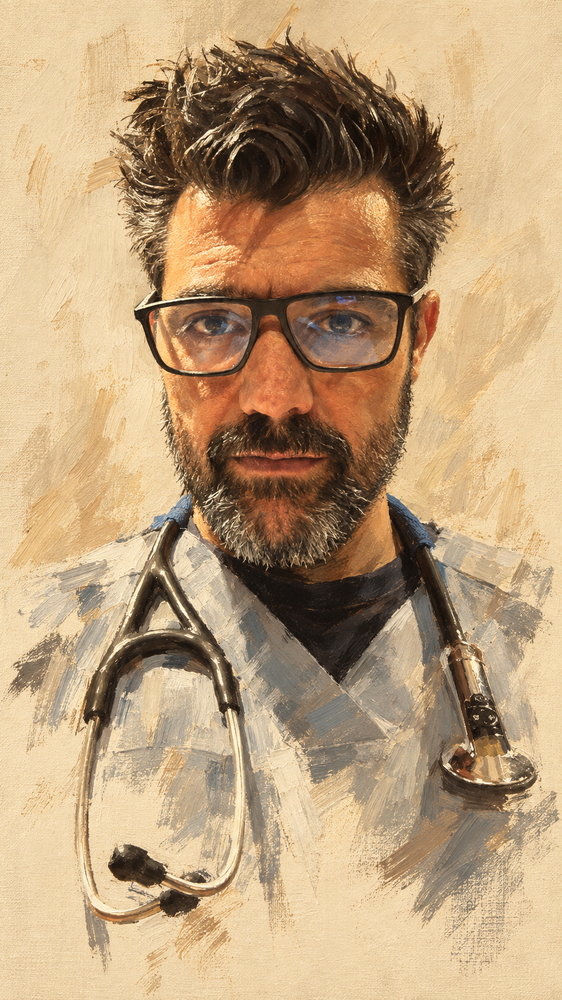

Angel Soto DVM PhD
Veterinario clínico, doctor en veterinaria.
Sobre mí
Veterinaria clínica, investigación, educación y desarrollo de herramientas digitales.

Veterinario internista de pequeños animales · Doctor en Veterinaria · Autor de MnemoVetDDx.
Doctor en Veterinaria por la Universidad Complutense de Madrid. Desarrollo proyectos digitales enfocados en utilidad clínica, docencia, visualización de información y herramientas interactivas.
Trabajo en Medicina Interna general en el Hospital Clínico Veterinario de la UCM, con experiencia en electrocardiografía y radiología a distancia a través de CARDIOVET®.
Además de la labor clínica, publico artículos científicos y participo en recursos relacionados con cardiología, electrocardiografía, urgencias y cuidados intensivos.
Destacados
Seguir usando
Tus últimos proyectos abiertos y tus favoritos.
Últimos abiertos
Favoritos
Explorar por áreas
Entrada más clara para no perderse entre tantos proyectos.


Todos los proyectos
Buscador, filtros y tarjetas con mejor jerarquía. Mucho más fácil de explorar que una lista o un selector largo.
Artículos
Acceso directo a publicaciones y materiales asociados.
Contacto
Para colaborar, comentar una idea o proponer un proyecto.